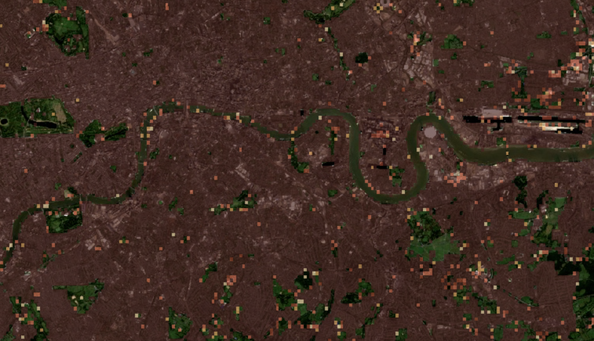

Week 01 · September 2026
The historic core is still mostly old
The question
Where are older buildings concentrated in the City of London, and what might this reveal about the persistence of London’s historic urban fabric?
The data
I used the Site Scanner’s “When it was built” layer to look at the age of buildings in London. The layer shows different building-age categories, including buildings built before 1975 and between 1975 and 1990. The satellite basemap provides the underlying view of the city.
I am using building age to stand for the persistence of older urban development, and it might fail because building age does not show renovations, rebuilding, or changes in how buildings are used.
The method
I used “Satellite (true color)” as the base layer and “When it was built” as the overlay. I focused on the area around the City of London and set the overlay opacity to 0.65 so that the building-age pattern could be compared with the underlying satellite map.

What I found
The map shows a clear pattern in the distribution of building ages around the City of London. There is a noticeable clustering of older buildings, especially those built before 1975 and between 1975 and 1990. Newer buildings appear less frequently, suggesting a relationship between the historic character of the City and the age of its built environment.
What this does not show
This map does not show why these buildings are old or whether the Great Fire of 1666 caused the pattern I see today. The Great Fire and the rebuilding regulations that followed may have shaped the long-term development of the City, but this map alone cannot show that. The result may also look different if I zoomed out to include a larger part of London.
AI use: AI-assisted for organizing and editing this journal entry, using ChatGPT. I reviewed the text and verified that the description matches my map and the work I completed.